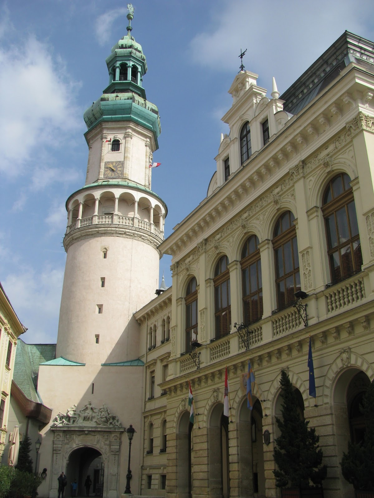
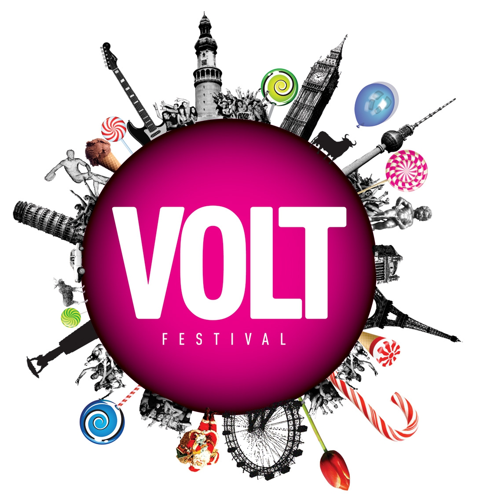

Kezdőlap |
Tanulmányaim |
Sport |
Sopron |
Elérhetőség |
| Sopron Szívemhez nagyon közel áll
Sopron, a leghűségesebb város. Anno 2000-ben itt születtem és azóta is
itt élek lassan 20 éve. Örülök, hogy elmondhatom magamról tősgyökeres
soproni vagyok, ugyanis ezt sajnos már egyre kevesebben tehetik meg a
városban. Az ausztriában dolgozó ingázoktól teli város lakosságát is
nehéz pontosan emiatt megállapítani. Bejelentett lakosok száma 2019-es
adat szerint nagyjából 50 ezer környékén volt, míg egyesej szerint már
több, mint 100 ezer emberél a városban.
Egy kis történelem Mint mindenki megtanulta
történelem órán - legalábbis nekem a fejembe verték - a város hűségéről
a trianoni békeszerződés következtében keletkező vita és megoldása
miatt híres. A lényeg röviden tömören, hogy a város akkor még nagyjából
azonos arányban volt lakott német ajkú, illetve magyar lakosokkal. A
város és környéke népszavazással döntött melyik országhoz szeretne
tartozni. Egy kis érdekesség még, hogy valójában Sopron lakosai nem
Magyarország mellett döntöttek. Azért tartozik mégis az
országunkhoz a város, mert a környező települések "megmentették".
|
 |
||
|  |
VOLT fesztivál A fesztivál a nevét a
rendszerváltás utáni években, az 1990-es évek elején VOLT néven
megjelenő popkulturális magazinról kapta. Az első fesztiválokat
1993-tól 2001-ig Húsvét tájékán a soproni Sportcentrumban rendezték,
melyeken a fellépők és a közönség száma is évről évre gyarapodott. A
növekvő népszerűség okán, 2002-ben a rendezvény állandó helyszíne és
időpontja is megváltozott, ekkor a Volt (immár a Sziget Fesztivál
társfesztiváljaként) nyári fesztivállá változott és a pár napos
időtartamra minden évben a soproni Lővér Kempingben bérel helyet a
bulizni vágyó fiatalok számára. A rendezvény országos sikereit évről
évre a közönség állandó bővülése jelzi.
A fesztivál programját a koncerteken és DJ szetteken kívül színházi
előadások, filmvetítések, kiállítások, beszélgetések és egyéb, például
sportprogramok is színesítik. A fesztivál ideje alatt működő Volt Rádió
az eseményhez kapcsolódó hangulatot interjúkkal, külön zenei kínálattal
juttatja el távoli helyszínekre.
A rendezvénysorozat nemzetközi rangját jelzi, hogy azon évről évre sok
neves külföldi előadóművész lép fel, valamint hogy a közönség mind
nagyobb hányada érkezik más (elsősorban nyugat- és kelet-európai)
országokból.
Sajnos a 2020-as fesztivál nem kerül megrendezésre, ami engem is nagyon elszomorít, ugyanis évek óta látogatója vagyok a fesztiválnak. Ugyan a fesztivál kezdi kinőni magát a kempingből, megvan a maga varázsa az erdős résznek és ezért is szeretjük mi soproniak a Volt fesztivált. |